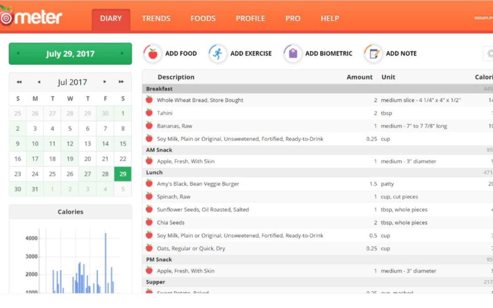
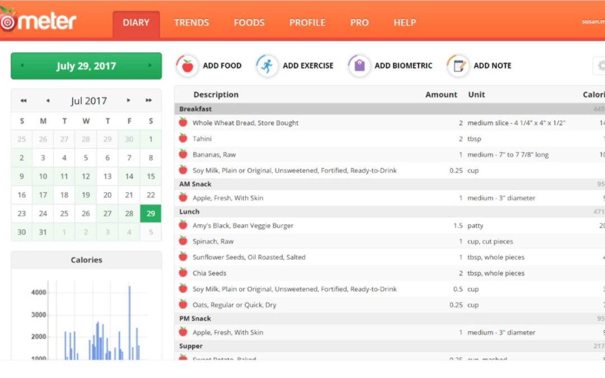

In this section, let us discuss about few tools that can help your journey accurately.
These
are only examples to give you an idea and not to make any endorsement or
recommendation for a product
The Cronometer
Often the challenge is to understand the nutrition / calorie values of the food items one
takes. Cronometer.com app and website gives an option to add food and understand
the same.
Steps:
. Register on chronometer.com
. Select a date
. Click on Add food, and serving size. This gives the calories and other nutrients
provided by the food.
. You can add the food items you consume to do a daily planning.
 

National Institute of Nutrition
National Institute of Nutrition published calorie/nutritional values of indian foods.It is a guide which contains more than 10 guidelines and is completely based on the indian diet and cover the cuisine of all cultures
Click here for more info